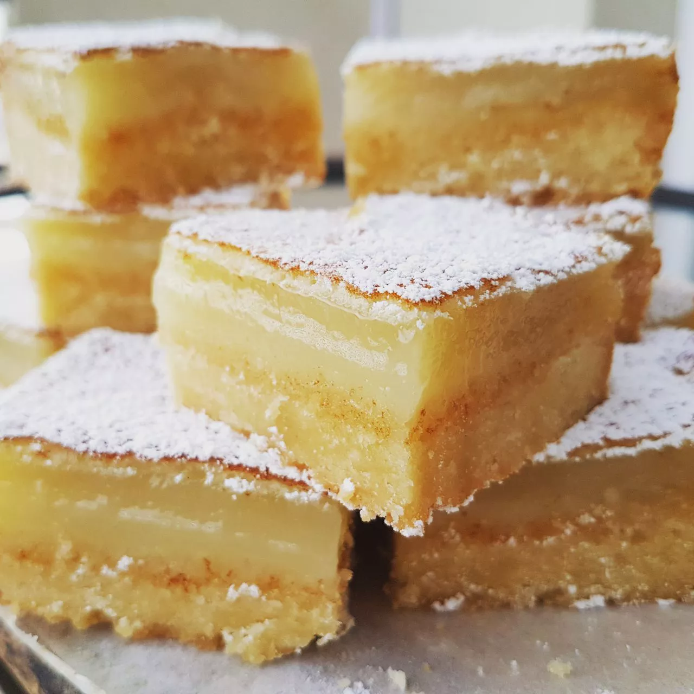

Lemon Bars

Description
Tart, rich and perfection, all rolled into one! Wow your friends with this simple recipe.
Hint: No Substitutions!
Ingredients
- 1 cup butter, softened
- ½ cup white sugar
- 2 cups all-purpose flour
- 4 eggs
- 1 ½ cups white sugar
- ¼ cup all-purpose flour
- 2 lemons, juiced
Steps
-
Preheat oven to 350 degrees F (175 degrees C).
-
In a medium bowl, blend together softened butter, 2 cups flour and 1/2 cup sugar.
Press into the bottom of an ungreased 9x13 inch pan.
-
Bake for 15 to 20 minutes in the preheated oven, or until firm and golden.
In another bowl, whisk together the remaining 1 1/2 cups sugar and 1/4 cup flour.
Whisk in the eggs and lemon juice. Pour over the baked crust.
-
Bake for an additional 20 minutes in the preheated oven.
The bars will firm up as they cool. For a festive tray,
make another pan using limes instead of lemons and adding a drop of green food coloring
to give a very pale green. After both pans have cooled,
cut into uniform 2 inch squares and arrange in a checker board fashion.